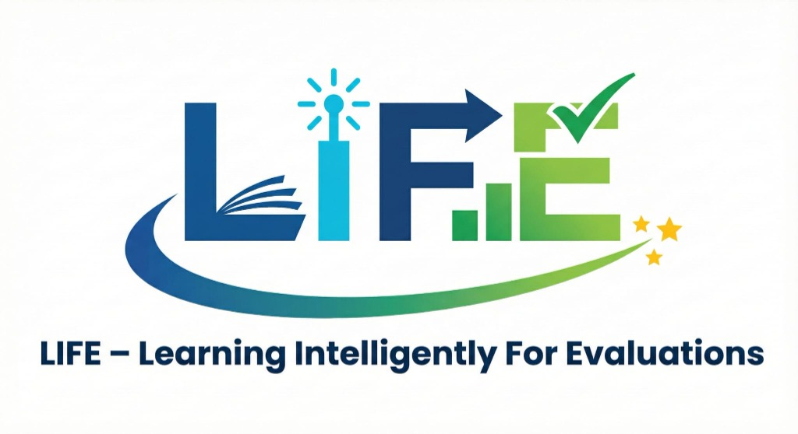

Erasmus+ L.I.F.E.
Tradiție și valori europene
Școala Gimnazială „Principele Carol" integrează tradiția și inovația, fiind o instituție recunoscută ca Școală Europeană. Cu un colectiv dedicat, ne concentrăm pe adaptarea continuă și promovarea calității în educație.
Misiunea noastră vizează crearea unui mediu educațional incluziv, stimulativ și performant. Prin proiectul L.I.F.E. răspundem provocărilor actuale: reducerea anxietății la teste, integrarea digitală și formarea unor cetățeni responsabili.

Analiza nevoilor
Reducerea anxietății
Combaterea stresului asociat testelor și evaluărilor naționale prin abordări prietenoase și tehnici moderne.
Incluziune și CES
Integrarea reală a elevilor cu cerințe educaționale speciale și prevenirea abandonului școlar prin suport personalizat.
Digital și eco
Digitalizare responsabilă și conștientizare ecologică pentru un viitor sustenabil și conectat.
Obiective strategice
Strategii didactice
Noi metode pedagogice pentru reducerea absenteismului și creșterea motivației.
Competențe TIC
Utilizarea bazelor de date digitale și a tehnologiei moderne în procesul de evaluare.
Socio-emoțional
Gestionarea stresului, dezvoltarea inteligenței emoționale și incluziune socială.
Eco și interdisciplinar
Formarea de Eco Ambasadori și implementarea abordărilor interdisciplinare.
Activități cheie
Clubul Eco Ambasadorilor
Promovarea ecologiei și a responsabilității în rândul elevilor și al comunității.
Proiect eTwinning
„Learning Together Through Games": învățare colaborativă prin joc, alături de parteneri europeni.
Mobilități europene
15 profesori (cursuri de formare) și 10-12 elevi (schimb de experiență) în școli europene.
Rezultate așteptate
3 culegeri de teste
Resurse valoroase pentru învățământ primar, gimnazial și educație specială (CES).
Platformă digitală
Resurse educaționale deschise (OER), accesibile gratuit pentru toți profesorii și elevii.
„Educația nu este pregătirea pentru viață, educația este viața însăși."
Alte inițiative educative
Școala Altfel și Săptămâna Verde
Săptămâni dedicate activităților non-formale, ieșirilor în natură și descoperirii talentelor ascunse.
Parteneriate locale
Colaborăm cu Casa de Cultură, Primăria, Biblioteca orășenească și Forumul German pentru o comunitate unită.